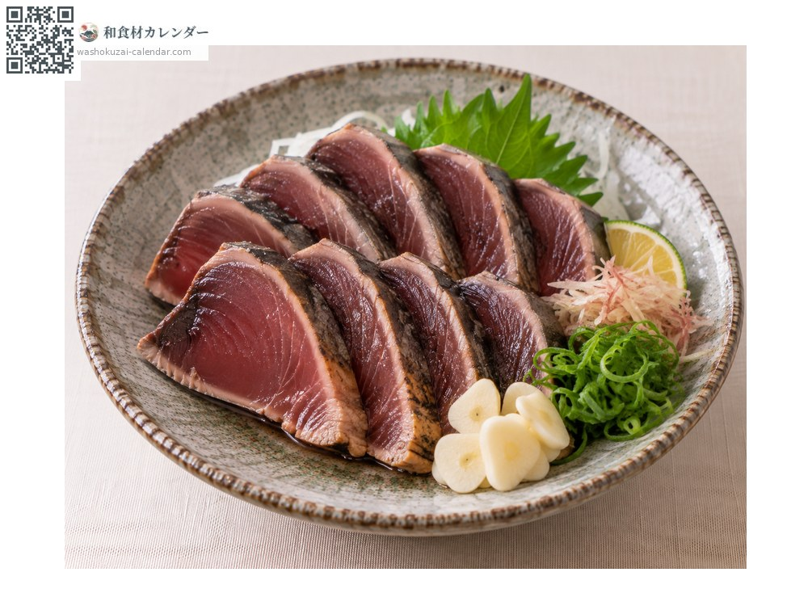
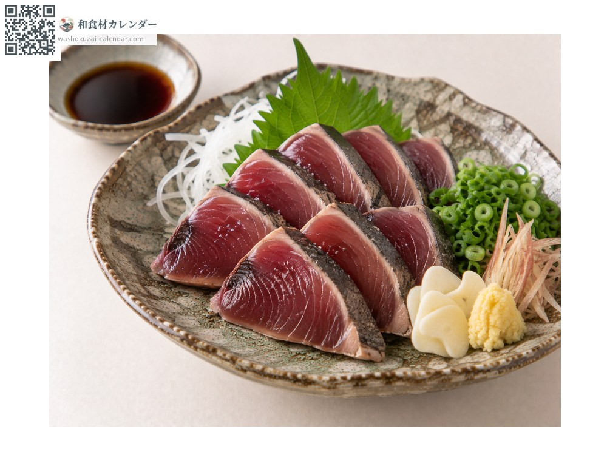
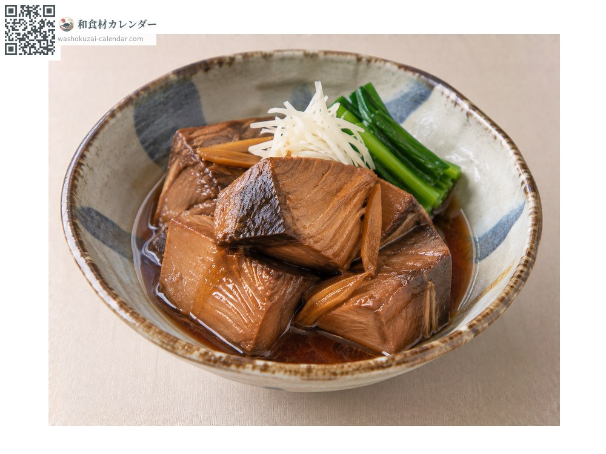
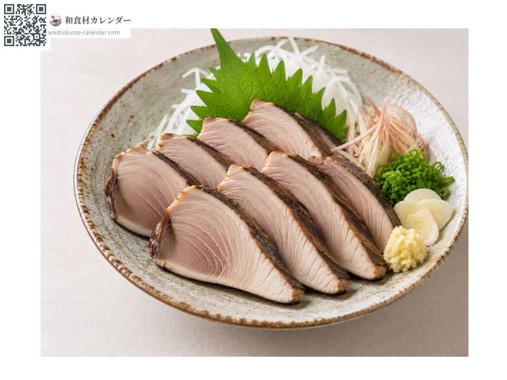

海鮮
鰹魚
カツオ かつお katsuo
別名katsuo
當令時期為5月、9月、10月

當令時期
1月
2月
3月
4月
5月
6月
7月
8月
9月
10月
11月
12月
當令有供應
料理方式

炙燒生切（叩）
表面炙燒後冰鎮。配蒜、薑與洋蔥。

生魚片
秋季的回游鰹油脂豐厚，風味濃郁。

甜醬油燉方塊
加薑甜鹹燉煮，可久放。

蒸後半乾的鰹魚塊
蒸過後略微風乾，適合做沙拉或涼拌。
挑選方式
切片的血合部位顏色鮮明、魚肉通透。放久了血合會發黑。
保存方式
變色快，當天食用。切片用保鮮膜緊貼包覆後冷藏。
主要產地
小知識
春天的「初鰹」清爽，秋天的「戻り鰹」油脂豐厚。同一種魚，風味差異很大。